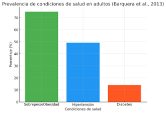

Sergio Mungia
Hi there,
Sergio Mungia (@Sergio)
Dashboard
-

Home
-

Profile
-

Messages
-

History
-

Tasks
-

Communities
-

Settings
-

Support
-

Privacy
EBC Mercadotecnia
Objetivo
El proyecto tiene como objetivo el ofrecer a las personas con enfermedades crónicas una opción alimentaria sana y de acuerdo con sus limitaciones por la enfermedad, totalmente enfocada en lo que padecen y procurando que puedan llevar una vida digna, plena y longeva, así como ordinaria.
Causas (parte 1)
Existen factores de riesgo, como la mala alimentación, el humo, el abuso del alcohol y el sedentarismo, que puede causar algunas enfermedades crónicas como la hipertensión, el colesterol alto, la glicemia elevada y la obesidad. Sin embargo, otros factores como la edad y la predisposición genética no pueden modificarse.
Causas (parte 2)
En el caso de la diabetes, sus principales causas son: La causa exacta de la mayoría de los tipos de diabetes se desconoce. En todos los casos, la glucosa se acumula en el torrente sanguíneo. Esto se debe a que el páncreas no produce suficiente insulina. Ambas clases de diabetes, tipo 1 y tipo 2, pueden causarse por una combinación de factores genéticos y ambientales.
Imagen representativa

Consecuencias (Parte 1)
La diabetes está asociada a un mayor riesgo de enfermedad cardíaca, accidente cerebrovascular, presión arterial alta y aterosclerosis, que es una afección que causa el estrechamiento de los vasos sanguíneos.
Afecta muchos de los órganos principales, como el corazón, los vasos sanguíneos, los nervios, los ojos y los riñones. Además, los factores que aumentan el riesgo de diabetes son factores de riesgo para otras enfermedades graves. El control de la diabetes y de los niveles de glucosa en la sangre pueden disminuir el riesgo de tener estas complicaciones y otras enfermedades.
Informacion extra
OBSERVACIÓN:
Rosa Maria Lazcano tienes una edad de 67 años tiene diabetes de tipo 2 , se levanta a las 6 pero a las 7 ya tiene que estar desayunada y haciendo actividades porque si no le dan mareos, toma 20 pastillas diarias, lleva 35 años padeciendo diabetes
ella ya no tiene dentadura además de que su visión se está deteriorando de una manera muy rápida y progresivamente además de que sus íes de le tienen que cuidar mucho porque si mientras le cortan las uñas la llegaran a lastimar su cuerpo no cicatriza como deberia siendo muy peligroso para ella
a pesar de tener tantos años con esta enfermedad se ve triste de padecerla además de que se ve desesperada por su situación al no poder estar con su familia cómo le gustaría, sin embargo ella dice ser feliz ya que su familia ha estado más presente para ella gracias a esto.
Comentarios